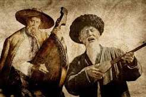
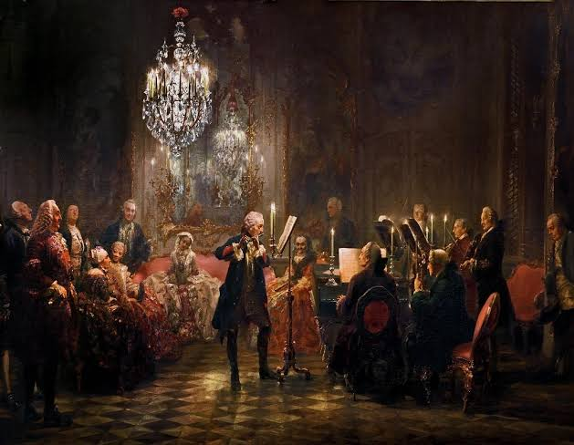
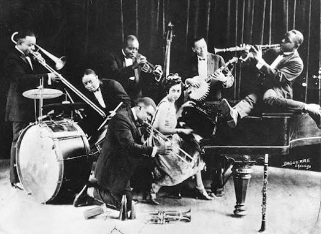
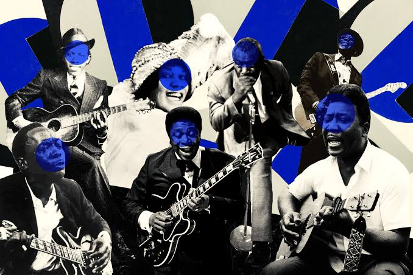
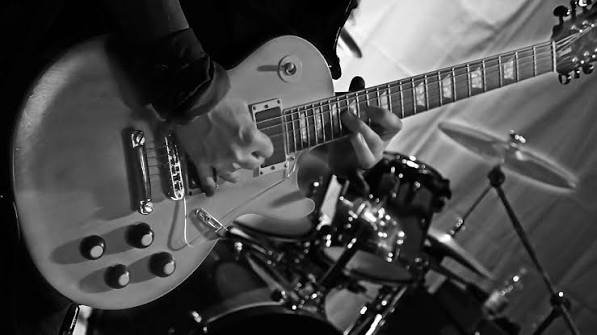
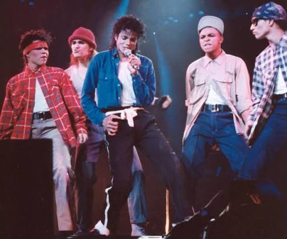

Folk
Народная музыка — это традиционный музыкальный жанр, который передается из поколения в поколение. Она отражает культуру и обычаи народа. И появилась примерно в глубокой древности — в дописьменную эпоху.
Подробнее о народной музыке

Classical
Классическая Музыка или Музыкальная Классика - Это Жанр музыки которая появилась во время классицизма а это было в 1750-1820 годах. И её смысл в сложной форме. Это музыка, которую строят как архитектуру: темы, развитие, контраст, возвращение. Слушать её интереснее, когда замечаешь эту структуру.
Подробнее о классической музыки

Jazz
Джаз — это музыкальный жанр, характеризующийся импровизацией, сложной структурой и использованием специальных инструментов. И появился в начале 20 века в США и он совмешен из двух основных традиций: афроамериканской и европейской. И её поджанры - блюз, свинг, боп и другие. И она связана с Электро и у нее есть свои поджанры которых я не знаю.
Подробнее о джазе

Blues
Блюз Музыка - это поджанр музыки которая выражает боль, тоску и трудности жизни но так чтобы стало легче. И появился в конце 19 века примерно 1860-1890 годах на юге США в районе Миссисипи. И писали афроамериканцы, потомки рабов.
Подробнее о джазе
Reggae
Регги - Это жанр музыки и её смылс в протеста и надежды и темы про социальную справедливость, бедность, свобода, мир и любовь, идеи растафарианства [идеи растафарианства - это религиозное и культурное движение, которое появилось на Ямайке в 1930-х годах и опирается на идеи свободы, любви, равенства и связи с африканскими корнями. ]
Подробнее о Регги

Rock
Рок — это музыкальный жанр, который возник в 1950-х годах в США. Он характеризуется громким звучанием, использованием электрических инструментов и часто содержит элементы протеста. И Появилась после сокращения Рок-н-ролла. И Рок в переводе на англ "rock" означает "покачаться" или "дрожать". И её поджанры - хард-рок, панк-рок, альтернативный рок, инди-рок, прогрессивный рок и другие.
И к нему относится жанр метал, который характеризуется агрессивным звучанием, быстрым темпом и использованием тяжелых гитарных рифов.
Подробнее о роке

Pop
Поп-музыка — это коммерчески ориентированный музыкальный жанр, который отличается простотой и доступностью для широкой аудитории. И Основные черты поп-музыки — простота инструментальной части, ритмичность, акцент на вокал. И её поджанры - k-pop, европоп, латина, синти-поп, диско, танцевальная музыка и другие.
Подробнее о поп-музыке
Hip-Hop
Хип-хоп — это музыкальный жанр, который возник в 1970-х годах в США. Он характеризуется рэп-пением, джентельменским стилем и использованием сэмплов. И её поджанры - trap, drill, мкр и другие. И она ещё связана с Электро и Металом
Подробнее о хип-хопе
Electronic
Электрок или Электро — это музыкальный жанр, который возник в 1970-х годах. Он характеризуется использованием синтезаторов, ударных машинок и электронных эффектов. И её поджанры - house, techno, trance и другие.
Подробнее о электро